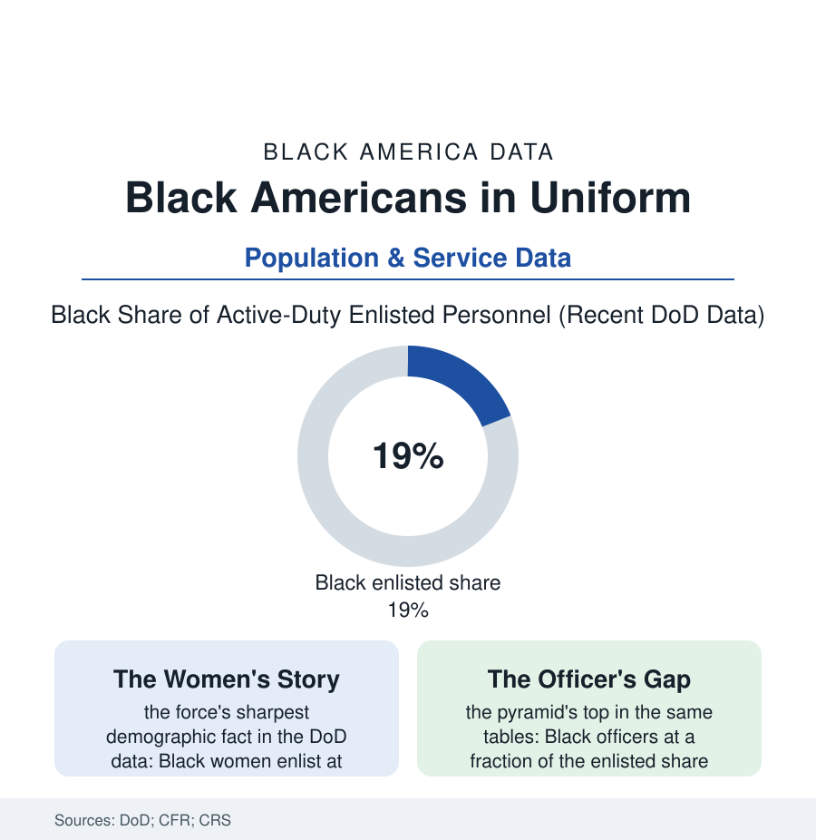

Black Census
In Uniform: The Military's Black Demographics
Black Americans serve at rates well above their share of the population — and the all-volunteer force's own data tell who enlists, who stays, and who rises. The service file.

Count the all-volunteer force by race and a structural fact of American life appears: Black Americans — about an eighth of the civilian population — are nearly a fifth of the active-duty enlisted ranks, and Black women are, by the Defense Department's own tables, the most enlisting demographic in the country. The military is at once the nation's most integrated institution and a mirror of its bargains. This article reads the service file.
Who Enlists, and What the Bargain Is
The enlistment data have a political economy the recruiting studies state without flinching: the services draw where the civilian offer is thinnest — the propensity surveys showing Black youth expressing military interest at rates above the national average, the recruiting stations' geography following the opportunity map of this entire atlas (the South's overrepresentation in the ranks beginning with its Black counties), and the enlistment bargain itself the most complete mobility package the employment file offers a young person without capital (the wage and the housing and the health care certain, the college money of the GI Bill, the clearance and the training convertible in the veterans' outcome data — the Black veteran's earnings and homeownership premiums over the non-veteran peer among the more robust findings in the outcomes literature, the service functioning for a century as the escalator its recruiters promise, with the deductions the next section counts). The women's numbers stand at the file's center for a reason the data support: the Army's enlisted women a third Black in recent DoD counts, the services offering the one large employer whose pay table is published, sex-blind, and race-blind by construction — the equal-pay fact the civilian file cannot match — joined to the benefits (childcare's military system, housing, the promotion boards' formal criteria) that the working-mother files price elsewhere. The reenlistment rows complete the bargain's evidence: Black servicemembers staying at higher rates than any group in the retention data, the career force's Black share rising with seniority until the very top — a workforce voting with its contracts, decade after decade, on the institution's comparative fairness, whatever its absolute flaws.
The Pyramid and the Price
The top of the pyramid tells the file's other story in the same tables: the officer corps' Black share running at barely half the enlisted share, the general and flag ranks thinner still in the promotion data — the pipeline's narrowing sorted by the commissioning sources (the academies' and ROTC's demographics), the branch assignments, and the mentorship arithmetic of a profession that promotes by sponsorship, the services' own inspector-general studies supplying the documentation. The price rows are kept with equal care: the exposure data (the combat arms' historical assignment patterns and the casualty files of the century's wars — the early Iraq years' toll falling, in the DoD's counts, disproportionately on the Black and Southern enlisted the recruiting map drew), the military justice file's disparities (the services' own reviews recording what the civilian pattern predicts — outside this article's advertiser-safe scope in its details, its existence is part of the record the retention numbers somehow coexist with), and the veterans' landing (the VA file's backlogs, the disability system's own disparity studies, the Black veteran's homelessness count in the HUD census — the escalator's bottom landing still sorted by the old geography). The file closes its accounting where the data insist: the institution that asks the most of Black America has also, measurably, returned the most reliable mobility of any single employer in this atlas — both halves of that sentence are in the Defense Department's own tables, which is precisely why the country argues about the military the way it does.
Reading the Service Data
Nearly one in five of the enlisted force, a third of its women soldiers, a shrinking fraction of its generals: the service file is the census of a bargain — struck young, kept faithfully on both sides more often than the civilian economy manages, and still unfinished at the top. The DoD publishes the tables every year. The recruiting station on the boulevard keeps the local copy. It has been taking the nation's sons and daughters — and returning veterans, homeowners, and officers — since the regiments formed on Vicksburg's bluffs.
More in Black Census
The Black Population of the United States: Size, Definitions, and Distribution
The Black population of the United States totals 52.8 million — 15.4 percent of the nation. How the Census Bureau defines and counts the population, and where it lives.
Black Median Household Income in the United States
Black median household income stands at $56,490 in the Census Bureau's annual income report — how the figure is measured, how it compares, and what drives it.
The Black Poverty Rate: Levels, Children, and the Long Trend
The official Black poverty rate is 17.1 percent — against 11.1 percent nationally and 7.7 percent for non-Hispanic White Americans. How poverty is measured and what the data show.
Source: U.S. Department of Defense manpower data; Council on Foreign Relations demographics of the U.S. military; Congressional Research Service; U.S. Census Bureau veterans data.